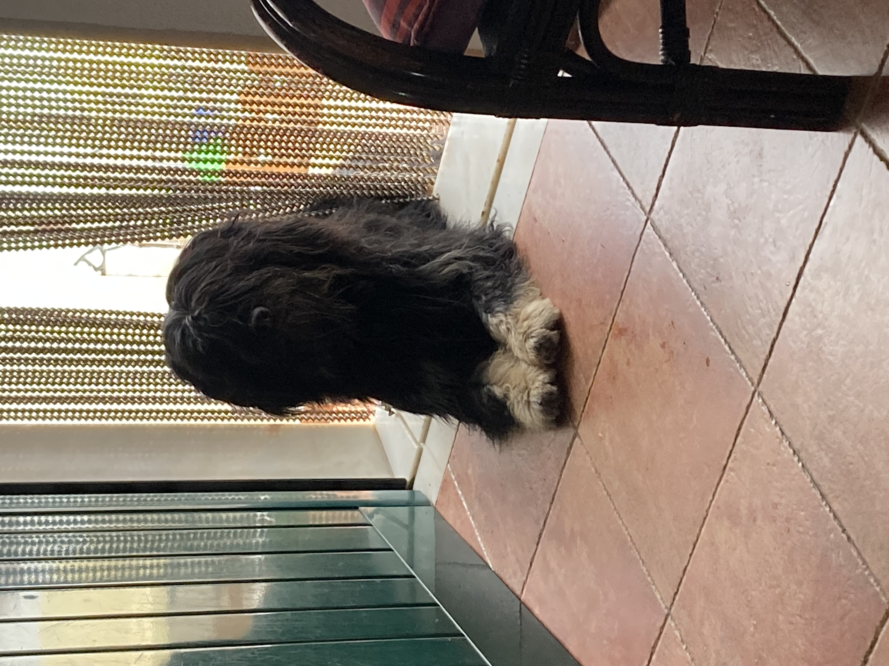
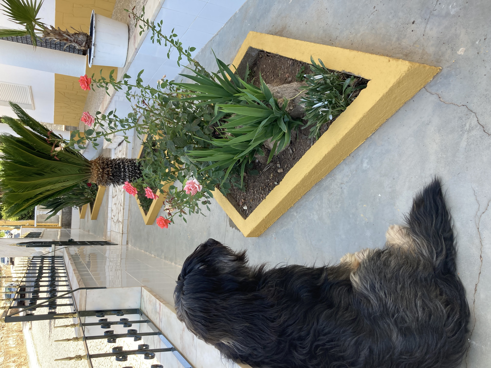

Mr Spock aka Spock 🖖  Fig. 2 - Spock. I'm a Star Trek fan Love playing with my bro Chewie Love treats! Back to Top 👆
Chewbacca aka Chewie 🻠 Fig. 3 - Chewie. I'm a Star Wars fan Love playing with my bro Spock I'm a lazy dog! Back to Top 👆